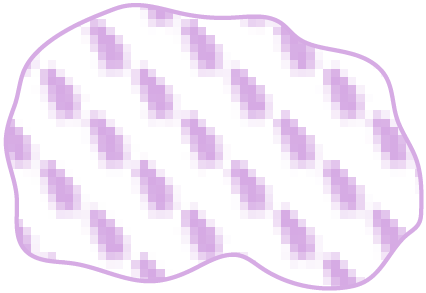
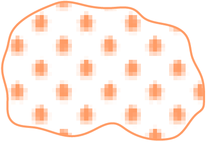

|  | Празької |
| Пеньківської | |
| Колочинської | |
| Райковецької | |
|  | Волинцівської і роменської |
| Салтівської | |
| Дані потребують уточнення |
| Напрям руху склавінів |
| Празької | |
| Пеньківської | |
| Колочинської | |
| Райковецької | |
| Волинцівської і роменської | |
| Салтівської |
| Городища | |
| Поселення | |
| Могильники |